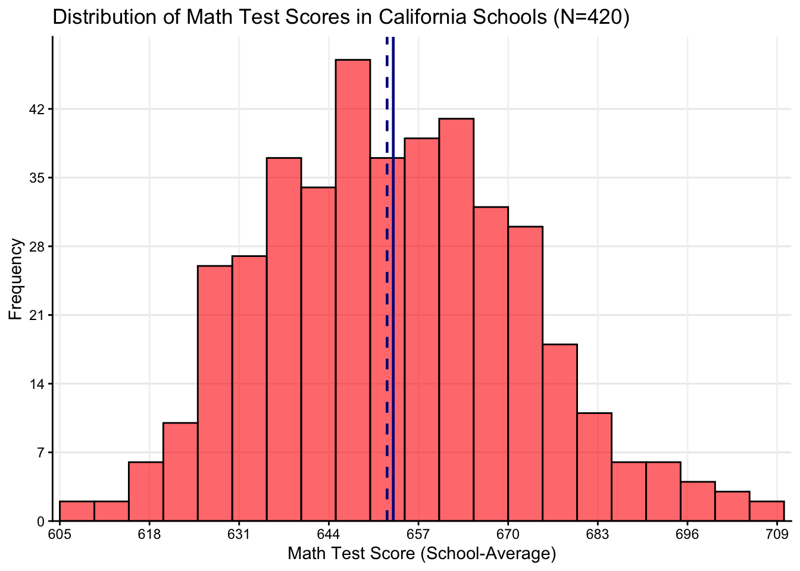
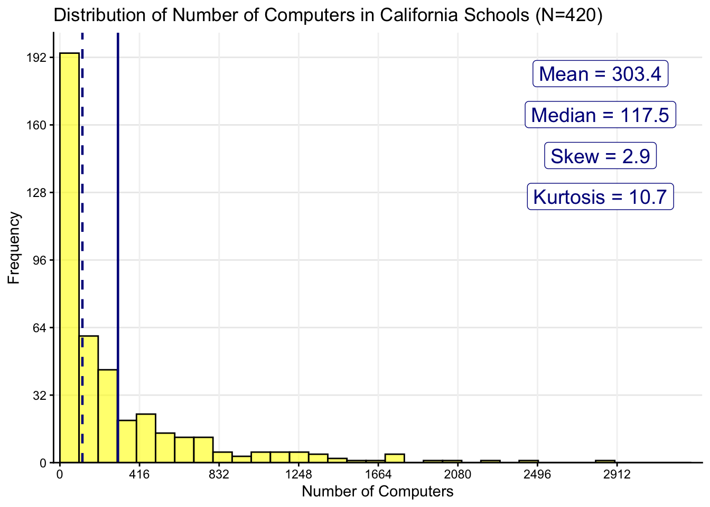
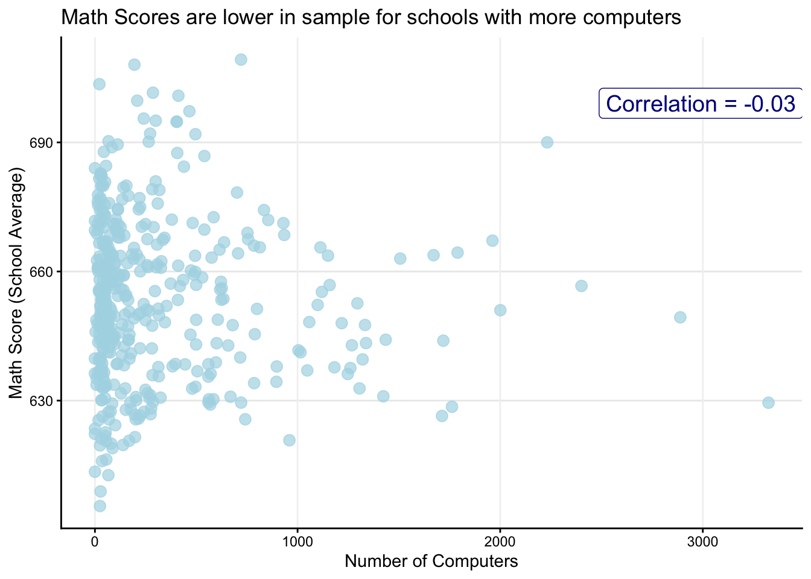
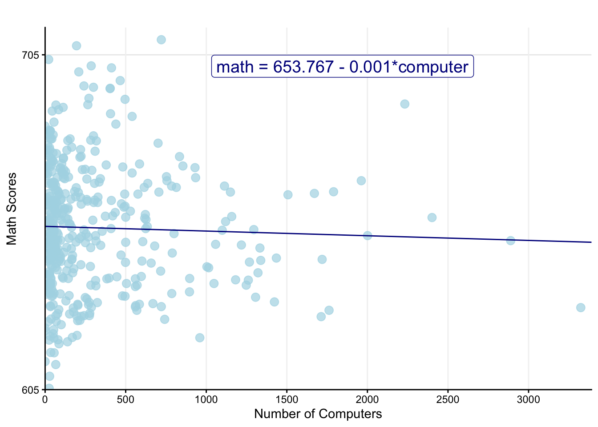
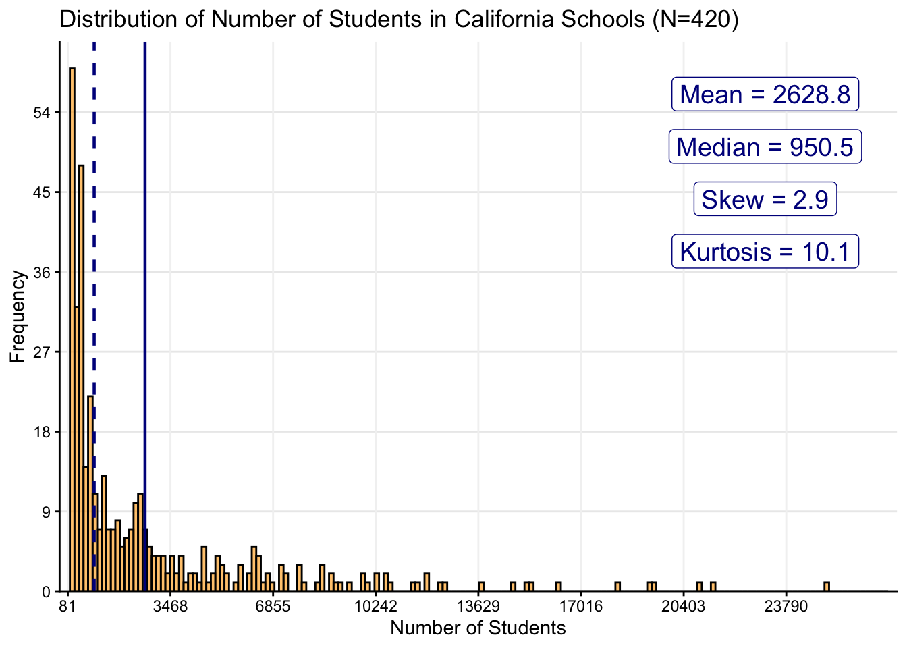
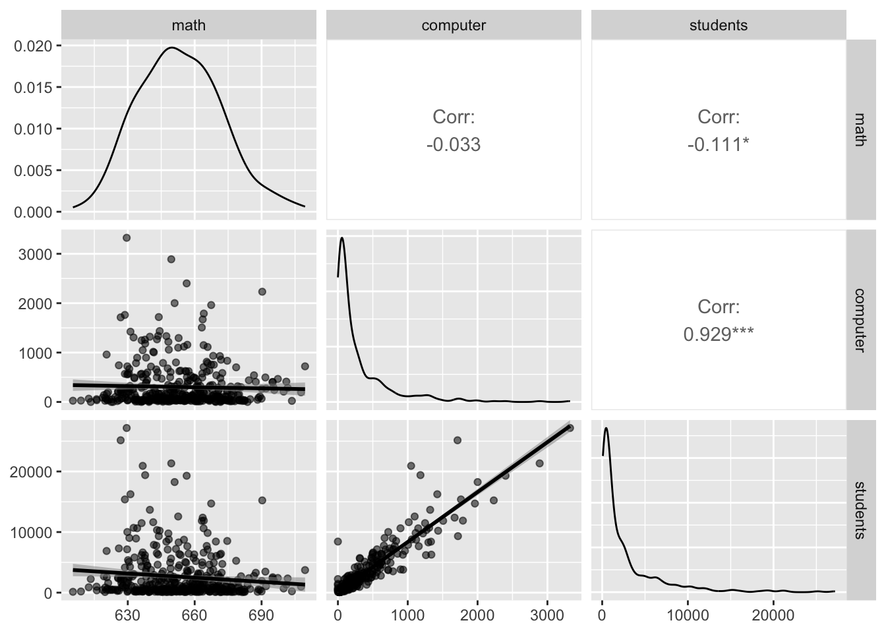
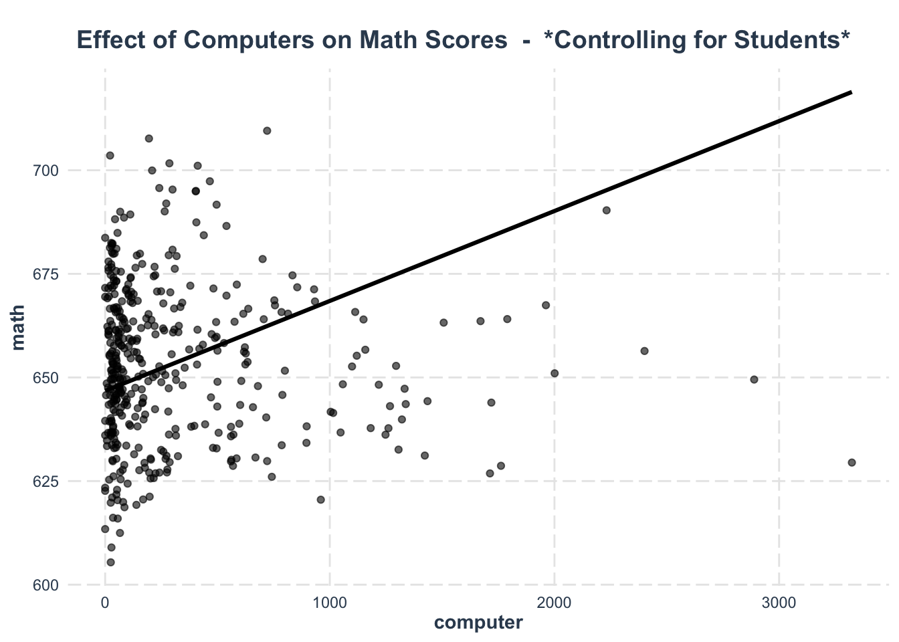

library(tidyverse)
library(janitor)
library(report)
library(GGally)
library(performance)
library(jtools)
source("load_plot_functions.R")Week 6 LAB: Introduction to Regression
PSY 150 - Lab Exercise
Outline
- Read in the Cali Schools sample data
- Look at the data & key variables (outcome & predictor)
- Practice estimating a regression model
- Explore model predictions
- Look at a 2nd data example - Income & Education
- Run regressions & explore predictions
- Practice reading in some data simulated for student projects
Load packages & plot functions
Acknowledgement:
The code for this lab exercise was adapted from and inspired by materials authored by Eric Van Holm’s bookdown titled, Introduction to Research Methods.
Data source:
Read-in lab exercise data
ca_schools <- read_csv("https://raw.githubusercontent.com/ejvanholm/DataProjects/master/CASchools.csv")
glimpse(ca_schools)Rows: 420
Columns: 15
$ ...1 <dbl> 1, 2, 3, 4, 5, 6, 7, 8, 9, 10, 11, 12, 13, 14, 15, 16, 17,…
$ district <dbl> 75119, 61499, 61549, 61457, 61523, 62042, 68536, 63834, 62…
$ school <chr> "Sunol Glen Unified", "Manzanita Elementary", "Thermalito …
$ county <chr> "Alameda", "Butte", "Butte", "Butte", "Butte", "Fresno", "…
$ grades <chr> "KK-08", "KK-08", "KK-08", "KK-08", "KK-08", "KK-08", "KK-…
$ students <dbl> 195, 240, 1550, 243, 1335, 137, 195, 888, 379, 2247, 446, …
$ teachers <dbl> 10.90, 11.15, 82.90, 14.00, 71.50, 6.40, 10.00, 42.50, 19.…
$ calworks <dbl> 0.5102, 15.4167, 55.0323, 36.4754, 33.1086, 12.3188, 12.90…
$ lunch <dbl> 2.0408, 47.9167, 76.3226, 77.0492, 78.4270, 86.9565, 94.62…
$ computer <dbl> 67, 101, 169, 85, 171, 25, 28, 66, 35, 0, 86, 56, 25, 0, 3…
$ expenditure <dbl> 6384.911, 5099.381, 5501.955, 7101.831, 5235.988, 5580.147…
$ income <dbl> 22.690001, 9.824000, 8.978000, 8.978000, 9.080333, 10.4150…
$ english <dbl> 0.000000, 4.583333, 30.000002, 0.000000, 13.857677, 12.408…
$ read <dbl> 691.6, 660.5, 636.3, 651.9, 641.8, 605.7, 604.5, 605.5, 60…
$ math <dbl> 690.0, 661.9, 650.9, 643.5, 639.9, 605.4, 609.0, 612.5, 61…Check Distribution of Outcome Variable (Y): Average Math Test Scores in California Schools (N=420)
hist_plot(
data = ca_schools,
x_var = math,
x_label = "Math Test Score (School-Average)",
binwidth=5,
fill = "red",
color = "black",
#break_min = 0, break_max = 35, break_by = 10,
mean_line = TRUE, median_line = TRUE,
skew_value = TRUE, kurtosis_value = TRUE,
title = "Distribution of Math Test Scores in California Schools (N=420) ",
) 
Check Distribution of Predictor Variable (X): Number of Computers in California Schools (N=420)
hist_plot(
data = ca_schools,
x_var = computer,
x_label = "Number of Computers",
binwidth=100,
fill = "yellow",
color = "black",
#break_min = 0, break_max = 35, break_by = 10,
mean_line = TRUE, median_line = TRUE,
skew_value = TRUE, kurtosis_value = TRUE,
title = "Distribution of Number of Computers in California Schools (N=420)") 
Take a look at the correlation between Computers (X) & Math Scores (Y)
scatter_plot(
data = ca_schools,
x_var = computer,
x_label = "Number of Computers",
y_var = math,
y_label = "Math Score (School Average)",
point_color = "lightblue",
corr_line = FALSE,
title = "Math Scores are lower in sample for schools with more computers")
Run regression model: Math (Y) regressed on Computer (X)
reg_model <- lm(formula = math ~ computer,
data = ca_schools)
summ(reg_model, digits = 3, model.fit = FALSE)| Observations | 420 |
| Dependent variable | math |
| Type | OLS linear regression |
| Est. | S.E. | t val. | p | |
|---|---|---|---|---|
| (Intercept) | 653.767 | 1.112 | 588.122 | 0.000 |
| computer | -0.001 | 0.002 | -0.674 | 0.501 |
| Standard errors: OLS |
Plot the linear regression model (line) & the data (points): Math (Y) regressed on Computer (X)
plot_reg(
data = ca_schools,
x_var = computer,
x_label = "Number of Computers",
y_var = math,
y_label = "Math Scores",
point_color = "lightblue",
reg_line = TRUE, eq_label = TRUE, digits = 3,
x_min = 0, x_max = 3324, x_by = 500,
y_min = 605, y_max = 710, y_by = 100,
title = ""
)
Check what the model predicts for schools with different numbers of computers (choose 2 numbers)
tibble(computer = c(100, 1000)) |>
mutate(predicted_math = predict(reg_model, newdata = cur_data())) |>
mutate(percent_diff = 100 * (predicted_math / first(predicted_math) - 1))# A tibble: 2 × 3
computer predicted_math percent_diff
<dbl> <dbl> <dbl>
1 100 654. 0
2 1000 652. -0.193Question: The negative association was unexpected, what can we do to investigate this relationship further?
Response: __________________________________________
How can we explain this? I am counfounded!
We should consider potential confounding variables:
An omitted variable which may explain the relationship between Math → Computers
Let’s look at how the number of students varies across California schools in this sample
hist_plot(
data = ca_schools,
x_var = students,
x_label = "Number of Students",
binwidth=150,
fill = "orange",
color = "black",
#break_min = 0, break_max = 35, break_by = 10,
mean_line = TRUE, median_line = TRUE,
skew_value = TRUE, kurtosis_value = TRUE,
title = "Distribution of Number of Students in California Schools (N=420)") 
How are the variables (math, computer, and students) related?
Let’s get a quick snapshot using ggpairs()
ca_schools |>
select(math, computer, students) |>
ggpairs(
aes(alpha = 0.05),
lower = list(continuous = "smooth"))
Question: What happens if we add a 2nd predictor to the regression model? If the relationship of predictor with the outcome is strong, it can effect the strength/direction of other predictors (Why?):
Response: __________________________________________
Let’s run a multiple regression model by adding students as a 2nd predictor
reg_model2 <- lm(formula =
math ~ computer + students, # ADD CONTROL
data = ca_schools)
summ(reg_model2, digits = 3, model.fit = FALSE)| Observations | 420 |
| Dependent variable | math |
| Type | OLS linear regression |
| Est. | S.E. | t val. | p | |
|---|---|---|---|---|
| (Intercept) | 654.133 | 1.089 | 600.431 | 0.000 |
| computer | 0.022 | 0.005 | 3.959 | 0.000 |
| students | -0.003 | 0.001 | -4.537 | 0.000 |
| Standard errors: OLS |
What does the model predict?
NOTE: The average number of students in the Cali Schools sample is 2629 students
tibble(computer = c(1000, 1000),
students = c(2629, 5000)) |>
mutate(predicted_math = predict(reg_model2, newdata = cur_data())) |>
mutate(percent_diff = 100 * (predicted_math / first(predicted_math) - 1))# A tibble: 2 × 4
computer students predicted_math percent_diff
<dbl> <dbl> <dbl> <dbl>
1 1000 2629 668. 0
2 1000 5000 662. -0.995Explaining variance in Math Scores & Shared Variance

Question: Explore a couple of different predictions by varying values for computer & student - Explain what you found:
Response: __________________________________________
Now take a look at the prediction line for computers (while fixing students at the average)
NOTE: By default effect_plot() fixes the other predictor (students) included in the model at its average (mean)
effect_plot(reg_model2, pred = computer, interval = FALSE, plot.points = TRUE,
jitter = 0.05, main.title = "Effect of Computers on Math Scores - *Controlling for Students*")
What does the model predict?
Pick values for education and see what the model predicts:
tibble(education = c(12, 16)) |>
mutate(predicted_wage = predict(model_wage, newdata = cur_data())) |>
mutate(percent_diff = 100 * (predicted_wage / first(predicted_wage) - 1))# A tibble: 2 × 3
education predicted_wage percent_diff
<dbl> <dbl> <dbl>
1 12 1077. 0
2 16 1409. 30.8Question: Explore a couple of different predictions by varying values for education - Explain what you found:
Response: __________________________________________
Read in some data simulated for student projects
Using Google Scholar to search for research:
https://scholar.google.com/
# Take a look at article (Cimprich, 2003) & codebook in "data" folder
nature_data <- read_csv(here("data", "nature_simdata_Cimprich2003.csv"))
glimpse(nature_data)Rows: 370
Columns: 19
$ participant_id <dbl> 1, 1, 2, 2, 3, 3, 4, 4, 5, 5, 6, 6, 7, 7, 8, 8, 9, 9,…
$ time_point <chr> "before", "after", "before", "after", "before", "afte…
$ nre_interv <chr> "treatment", "treatment", "treatment", "treatment", "…
$ attention_dsf <dbl> 7.152808, 9.342054, 5.033118, 6.351178, 6.918399, 6.0…
$ attention_dsb <dbl> 6.906371, 6.222448, 3.670550, 4.315738, 2.612882, 4.8…
$ attention_tma <dbl> 91.27129, 93.47288, 85.44654, 86.32498, 81.22783, 89.…
$ attention_tmb <dbl> 110.08132, 115.48020, 103.26191, 114.44411, 106.93829…
$ attention_ncpc <dbl> 12.4766314, 44.0939710, 0.0000000, 16.1631773, 4.7974…
$ depress_score <dbl> 10, 8, 14, 17, 18, 9, 10, 12, 17, 13, 16, 13, 18, 12,…
$ anxiety_score <dbl> 11, 7, 14, 16, 16, 6, 9, 10, 19, 12, 16, 10, 18, 11, …
$ age <dbl> 50, 50, 66, 66, 54, 54, 60, 60, 39, 39, 58, 58, 35, 3…
$ education_yrs <dbl> 10, 10, 16, 16, 15, 15, 16, 16, 13, 13, 15, 15, 15, 1…
$ race <chr> "Caucasian", "Caucasian", "Caucasian", "Caucasian", "…
$ marital_status <chr> "Married", "Married", "Single/Widowed/Divorced", "Sin…
$ comorbid <chr> "No", "No", "Yes", "Yes", "Yes", "Yes", "No", "No", "…
$ disease_stage <dbl> 2, 2, 1, 1, 2, 2, 1, 1, 2, 2, 1, 1, 1, 1, 2, 2, 2, 2,…
$ surgery_extent <chr> "Mastectomy", "Mastectomy", "Mastectomy", "Mastectomy…
$ health_problems <chr> "No", "No", "Yes", "Yes", "Yes", "Yes", "No", "No", "…
$ symptom_distress <dbl> 16, 15, 18, 22, 27, 26, 27, 28, 20, 20, 28, 24, 27, 2…# Take a look at article (Reuter, 2021) & codebook in "data" folder
nutrition_data <- read_csv(here("data", "nutrition_academics_sim_N577.csv"))
glimpse(nutrition_data)Rows: 577
Columns: 22
$ participant_id <dbl> 1, 2, 3, 4, 5, 6, 7, 8, 9, 10, 11, 12, 13, 14, …
$ sex <chr> "female", "female", "female", "male", "female",…
$ age <dbl> 20, 18, 19, 18, 20, 19, 19, 20, 18, 18, 18, 19,…
$ race <chr> "hispanic", "white", "white", "black", "asian",…
$ class_year <chr> "junior", "junior", "freshman", "junior", "soph…
$ full_time <dbl> 1, 1, 1, 1, 1, 1, 1, 1, 1, 1, 0, 0, 1, 1, 1, 1,…
$ sleep_hours <dbl> 5.86, 8.67, 9.25, 8.03, 5.66, 8.49, 6.87, 6.24,…
$ study_hours_week <dbl> 10.38, 4.91, 17.65, 7.06, 16.81, 11.68, 17.30, …
$ physical_activity_days <dbl> 2, 5, 2, 2, 4, 4, 0, 5, 4, 2, 1, 4, 2, 2, 2, 0,…
$ alcohol_drinks_week <dbl> 4, 6, 5, 0, 4, 4, 2, 1, 1, 4, 3, 2, 0, 3, 3, 0,…
$ food_insecure <dbl> 0, 0, 0, 0, 0, 0, 0, 0, 0, 0, 0, 1, 0, 1, 0, 0,…
$ breakfast_days_week <dbl> 4, 2, 1, 5, 7, 6, 7, 5, 0, 2, 4, 5, 5, 0, 1, 6,…
$ fast_food_freq_week <dbl> 3, 1, 2, 0, 3, 1, 0, 3, 5, 3, 1, 3, 1, 0, 1, 0,…
$ fruit_servings_week <dbl> 2, 4, 2, 1, 4, 10, 11, 8, 2, 1, 3, 0, 4, 5, 11,…
$ veg_servings_week <dbl> 1, 11, 2, 7, 12, 2, 13, 12, 12, 6, 4, 9, 4, 9, …
$ milk_servings_week <dbl> 13, 5, 5, 12, 11, 4, 1, 7, 5, 9, 9, 9, 4, 5, 13…
$ soda_servings_week <dbl> 11, 1, 6, 8, 5, 4, 9, 2, 7, 14, 4, 7, 19, 10, 2…
$ breakfast_quality <chr> "good", "average", "good", "average", "average"…
$ diet_quality_overall <chr> "good", "good", "average", "average", "poor", "…
$ pre_test_meal <chr> "home_made", "fast_food", "fast_food", "fast_fo…
$ gpa <dbl> 3.51, 2.98, 3.68, 3.71, 3.04, 3.62, 4.00, 3.39,…
$ biology_test_score <dbl> 89.96, 80.24, 69.98, 88.08, 75.07, 90.81, 95.71…# Take a look at article (Jniene, 2019) & codebook in "data" folder
sleep_data <- read_csv(here("data", "blue_light_sleep_sim_psqi.csv"))
glimpse(sleep_data)Rows: 286
Columns: 25
$ participant_id <dbl> 1, 2, 3, 4, 5, 6, 7, 8, 9, 10, 11, 12, 13, …
$ sex <chr> "female", "male", "female", "male", "male",…
$ age <dbl> 18, 21, 21, 19, 20, 20, 19, 20, 22, 20, 22,…
$ field_study <chr> "medicine", "medicine", "medicine", "medici…
$ owns_device <dbl> 1, 1, 1, 1, 1, 1, 1, 1, 1, 1, 1, 1, 1, 1, 1…
$ bedtime_device_use <dbl> 1, 1, 1, 1, 1, 1, 1, 1, 1, 1, 1, 1, 1, 1, 1…
$ brightness_adjustment <chr> "on", "on", "on", "on", "on", "off", "on", …
$ room_lights_off <dbl> 1, 0, 1, 1, 1, 0, 1, 1, 1, 0, 1, 1, 1, 1, 1…
$ device_switched_off <dbl> 0, 0, 0, 0, 0, 0, 0, 0, 0, 0, 0, 0, 0, 0, 0…
$ device_under_pillow <dbl> 0, 0, 0, 0, 1, 0, 1, 0, 0, 1, 0, 0, 0, 1, 0…
$ sleep_interrupt_check <dbl> 1, 0, 1, 1, 1, 0, 1, 0, 0, 0, 1, 1, 0, 0, 0…
$ use_reason <chr> "leisure", "reading", "reading", "leisure",…
$ device_use_minutes_bedtime <dbl> 126.3, 90.9, 119.3, 108.3, 71.9, 111.2, 68.…
$ sleep_duration_hours <dbl> 8.08, 4.77, 5.09, 6.25, 6.20, 7.49, 6.86, 9…
$ sleep_efficiency_pct <dbl> 77.4, 99.0, 66.1, 79.3, 63.0, 93.8, 99.0, 8…
$ sleep_latency_min <dbl> 33, 21, 37, 29, 45, 36, 10, 15, 29, 29, 14,…
$ fatigue_on_waking_perweek <dbl> 6, 5, 7, 1, 4, 5, 4, 4, 5, 4, 4, 2, 4, 3, 4…
$ headaches_perweek <dbl> 1, 1, 3, 0, 2, 1, 0, 1, 3, 2, 2, 1, 3, 3, 2…
$ irritability_perweek <dbl> 4, 3, 3, 2, 2, 4, 4, 1, 2, 0, 2, 1, 2, 2, 2…
$ sleep_quality_psqi <dbl> 5, 5, 4, 4, 5, 5, 6, 4, 7, 4, 6, 5, 5, 5, 5…
$ psqi_poor <dbl> 0, 0, 0, 0, 0, 0, 1, 0, 1, 0, 1, 0, 0, 0, 0…
$ caffeine_cups_day <dbl> 3, 0, 0, 1, 0, 0, 3, 2, 1, 2, 1, 1, 2, 4, 2…
$ exercise_days_week <dbl> 3, 1, 0, 0, 6, 3, 2, 4, 3, 4, 4, 4, 1, 3, 3…
$ chronotype <chr> "morning", "intermediate", "evening", "inte…
$ bmi <dbl> 19.9, 16.8, 21.0, 26.0, 27.8, 22.8, 26.6, 2…